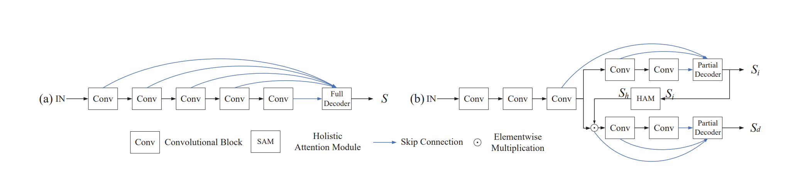

本文所提出的网络结构主要有以下两处创新点：1.舍弃了低级特征，显著提升了运行速度；2.高层特征提取网络分为attention branch及detection branch两支结构相似但作用不同的分支，并通过HAM（Holistic Attention Module）进行了连接以得到精细化的显著性图。

本文以VGG16为特征提取模型，舍弃了前三层低级特征，之后分为attention branch与detection branch，其包含结构相同的第四及第五层，并都在末端连接partial decoder，但参数不共享。
Partial decoder使用了改进的RFB(receptive field block)模块，添加了一个分支以增大感受野，并使用1*1卷积降低计算量。这部分内容文章里过于简略，细节需要靠看代码理解。attention branch的partial decoder的输出与VGG16的第三层特征对应元素相乘，然后输入detection branch，该部分个人理解为类似注意力机制。模型为了简洁，两个分支采用了同样的partial decoder结构，区别仅在于detection branch的输入为加权的特征图，最终detection branch的partial decoder输出预测特征图。
两个分支联合训练，损失函数均采用交叉熵损失，总损失函数为两分支partial decoder输出的损失函数之和。
模型在ECSSD、HKU-IS、DUT-OMRON、DUTS、PASCAL-S数据集上进行了测试，均可达到SOTA表现。此外CPD模型的运行速度明显快于现有显著性检测网络，在352*352像素输入、设备为1080ti的情况下，视网络结构不同可达60至110fps。